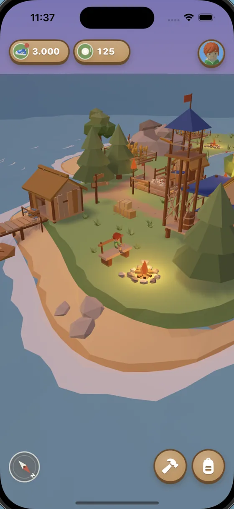
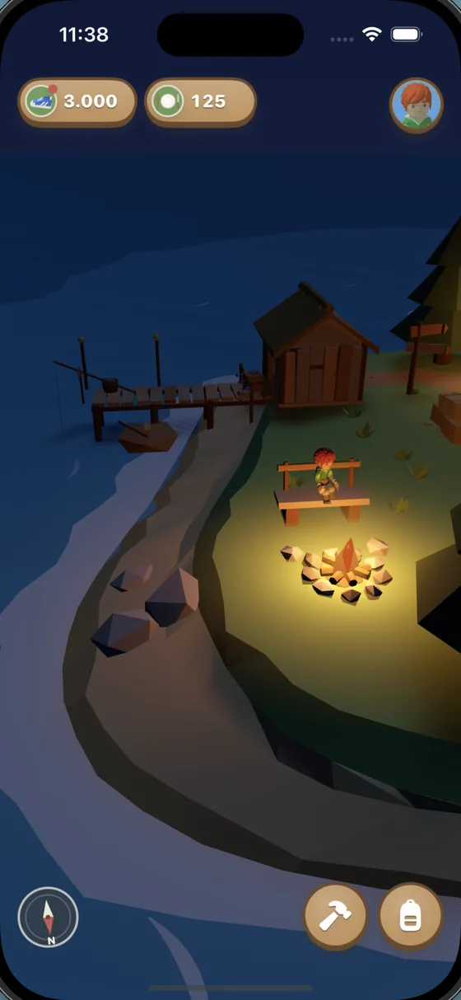
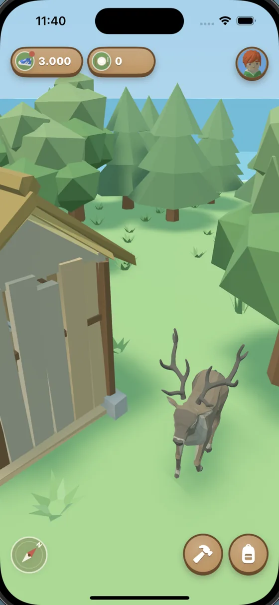
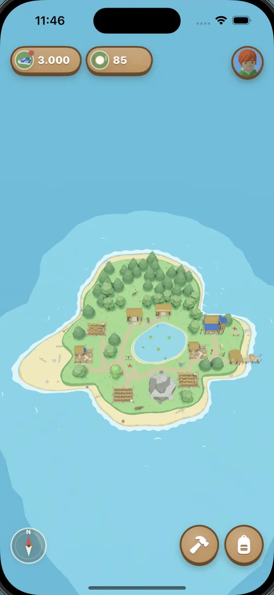
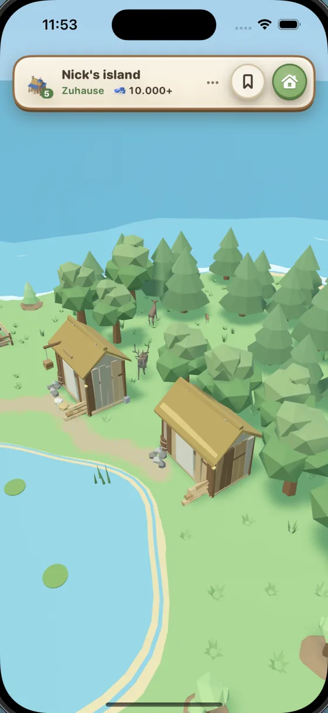

Worum es geht
Du startest auf einer kleinen, verlassenen Insel mit Wald, Steinhügel und einem Sandstrand. Was daraus wird, entscheiden deine Schritte. Fast alles auf der Insel kostet Schritte, und die sammelst du ganz nebenbei im Alltag.
-
Gehen und sammeln
Mit deinen Schritten fällst du Bäume, baust Stein ab, holst Sand vom Strand und gehst angeln. Neue Setzlinge pflanzt du selbst und siehst zu, wie daraus ein Wald wird.
-
Bauen und ausbauen
Aus der ersten Hütte wird Stufe für Stufe ein kleines Dorf: Felder, Hühnerfarm, Lagerhaus und Fischerei. Die Hütte schaltet Neues frei, ganz am Ende wartet der Leuchtturm. Wird es eng, erweiterst du die Insel.
-
Tiere und Deko
Zwölf Tiere ziehen bei dir ein, vom Fuchs über das Alpaka bis zum Hirsch. Mit Lagerfeuern, Bänken, Blumenbeeten und Trampelpfaden gestaltest du die Insel so, wie sie dir gefällt.
-
Freunde besuchen
Mit deinem Inselcode können Freunde deine Insel besuchen, und du ihre. Die Insel folgt der echten Tageszeit: Abends leuchten Lagerfeuer und Fackeln.
StepIsle ist bewusst ruhig gehalten. Es gibt keinen Zeitdruck, nur eine Insel, die mit dir wächst, und einen kleinen Grund mehr, heute noch eine Runde zu drehen.

Am Lagerfeuer 
Nachts auf der Insel 
Tiere ziehen ein 
Deine Insel wächst 
Zu Besuch bei Freunden
Häufige Fragen
Wie kann ich den Namen meiner Insel und meines Spielers ändern?
Um den Namen deiner Insel oder deines Spielers zu ändern, öffne dein Profil in der App und tippe 20-mal auf dein Profilbild. Anschließend kannst du die Namen ändern.
Woher kommen meine Schritte?
StepIsle liest deine Schritte aus Apple Health. Dort landen die Schritte, die dein iPhone zählt, und, wenn du eine trägst, auch die deiner Apple Watch. Schritte, die du gehst, während die App geschlossen ist, werden beim nächsten Öffnen nachgetragen.
Wie besuche ich meine Freunde?
Öffne dein Profil. Unter „Freunde“ findest du deinen Inselcode, den du kopieren oder teilen kannst. Über „Insel besuchen“ gibst du den Code eines Freundes ein. Damit andere deine Insel besuchen können, musst du auf deinem iPhone bei iCloud angemeldet sein.
Was sehen andere, wenn sie meine Insel besuchen?
Sie sehen deine Insel mit Gebäuden, Deko und Tieren, deinen Namen, den Namen deiner Insel und die Stufe deiner Hütte. Deine Schritte erscheinen nur als gerundeter Meilenstein, zum Beispiel „10.000+“. Deine genaue Schrittzahl, Daten aus Apple Health und deine Vorräte werden nicht geteilt.
Was passiert mit meiner Insel, wenn ich ein neues iPhone bekomme?
Deine Insel wird in deiner iCloud gesichert. Melde dich auf dem neuen iPhone mit demselben iCloud-Konto an und tippe beim Start auf „Spielstand laden“.
Kann ich meine Insel löschen?
Ja. Ganz unten im Profil findest du „Insel und Konto löschen“. Zur Sicherheit musst du „LÖSCHEN“ eintippen. Deine Insel wird dann auch aus iCloud entfernt. Das lässt sich nicht rückgängig machen.
Auf welchen Geräten läuft StepIsle?
StepIsle gibt es für das iPhone ab iOS 18.
StepIsle laden
Die nächste Runde um den Block zählt schon für deine Insel.